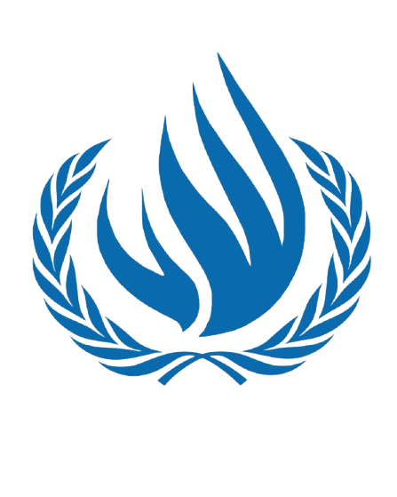
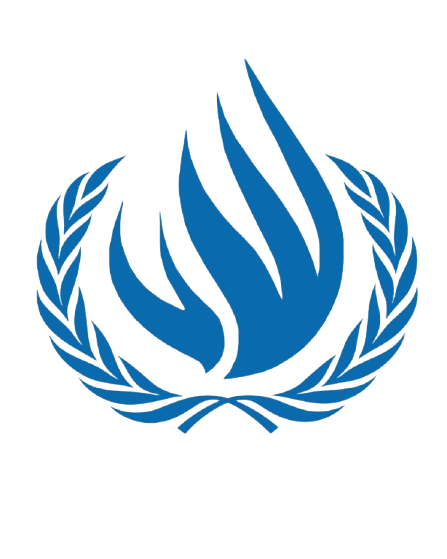

ALL INDIA
POLITICAL PARTIES MEET
 

The All India Political Parties Meet (AIPPM) will deliberate on the unconstitutional extent of military powers granted by the Armed Forces Special Powers Act (AFSPA) of 1958, particularly in conflict-prone and conflicted regions of India. This agenda focuses on critically examining the broad and often controversial powers given to armed forces under AFSPA, including arrest without warrant, use of lethal force, and legal immunity in disturbed areas across several northeastern states and Jammu & Kashmir. Delegates will discuss the implications of these powers on human rights, democratic principles, and the rule of law, aiming to explore reforms that balance national security with constitutional safeguards and protection of civil liberties. The committee will also consider the impact of AFSPA on local communities and the ongoing debates around its necessity and scope.

UNITED NATIONS
SECURITY COUNCIL
The United Nations Security Council (UNSC) committee will deliberate on the urgent issue of power stagnation within the Council, focusing on the need for structural reforms to create a more equitable global security framework. Central to this agenda is the examination of the provision of veto powers, which has long been a source of deadlock and perceived inequity in the Council’s decision-making process.The committee will explore reform proposals—such as modifying or limiting the use of veto, expanding membership, and introducing new categories of representation—to enhance both equity and efficiency within the UNSC.
UNITED NATIONS
HUMAN RIGHTS COUNCIL
The United Nations Human Rights Council (UNHRC) will address the pressing issue of grooming gang activities in the Western Hemisphere, focusing on the involvement of illegal immigrants. This agenda aims to explore the human rights implications of such activities while emphasizing the legal frameworks related to the Jehovah’s Witnesses community. Delegates will be tasked with examining the intersection of human rights, immigration laws, and religious freedoms to propose comprehensive strategies that uphold justice, protect vulnerable populations, and promote social cohesion in affected regions. The committee will seek to balance security concerns with respect for human rights and international legal standards.
UNITED NATIONS OFFICE
ON DRUGS AND CRIME
The United Nations Office on Drugs and Crime (UNODC) will discuss the critical issue of state complicity and corporate collusion in empowering transnational drug cartels. This agenda focuses on how certain state actors and corporate entities facilitate drug trafficking networks by providing precursor chemicals, logistical support, or turning a blind eye to illicit activities. Delegates will examine the impact of corruption, political alliances, and economic incentives that enable cartels to operate across borders, undermining global security and public health. The committee aims to develop strategies to enhance international cooperation, strengthen legal frameworks, and hold complicit actors accountable to disrupt the operations of these powerful criminal organizations.
HISTORICAL
CRISIS COMMITTEE

Agenda: The Suez Canal Crisis
The Historical Crisis Committee (HCC) will immerse delegates in the pivotal events of the Suez Crisis, with the freeze date set at 29th October 1956—the day Israeli forces launched their invasion of Egypt. This marked the beginning of a dramatic military and diplomatic confrontation, triggered by Egyptian President Gamal Abdel Nasser’s nationalization of the Suez Canal, previously controlled by British and French interests. The crisis rapidly escalated as Britain and France, in coordination with Israel, sought to regain control of the canal and depose Nasser, fearing the loss of Western influence and access to a vital maritime route.
CONTINUOUS
CRISIS COMMITTEE
The Continuous Crisis Committee (CCC) will explore the intriguing agenda of "Redirecting the War of Kurukshetra – Mahabharat." In this simulation, delegates will step into the shoes of legendary figures from the Mahabharata and confront the pivotal moments that led to the historic battle between the Pandavas and Kauravas. The committee will challenge participants to re-examine the causes, decisions, and alliances that shaped the conflict, with the objective of seeking alternative diplomatic, strategic, or ethical solutions that could have altered the course of the war. Delegates will debate key turning points, negotiate peace, and propose new pathways to resolve the dynastic struggle, testing their skills in crisis management, negotiation, and creative problem-solving within the rich context of one of India’s greatest epics.
INTERNATIONAL
PRESS
The International Press (IP) committee invites esteemed Journalists, Photographers, Caricaturists, and Video Editors to join a dynamic team dedicated to capturing and reporting every moment of the conference. As the eyes and ears of the event, IP members will document debates, conduct interviews, create insightful articles, and produce engaging visual content that reflects the spirit and intensity of the proceedings. The committee offers a unique opportunity to exercise integrity, creativity, and analytical skills while ensuring unbiased, accurate, and thought-provoking coverage across all committees. Whether through words, images, caricatures, or videos, the International Press plays a crucial role in shaping public perception and fostering awareness about the critical issues discussed at the MUN.